逻辑漏洞
最后更新时间:
文章总字数:
预计阅读时间:
浅析逻辑漏洞
1. 漏洞介绍
1.1 成因
设计阶段产生，老司机也会产生、相对难发现、难以防护，相对容易利用 第三方逻辑缺陷、没有在设计初期进行安全审计、安全水平及对安全认知程度不一致
逻辑漏洞是指由于程序逻辑不严或逻辑太复杂，导致一些逻辑分支不能够正常处理或处理错误，一般出现任意密码修改（没有旧密码验证）、越权访问、密码找回、交易支付金额等。
逻辑漏洞是指攻击者利用业务/功能上的设计缺陷，获取敏感信息或破坏业务的完整性, 逻辑漏洞的破坏方式并非是向程序添加破坏内容，而是利用逻辑处理不严密或者代码问题或固有不足，操作上并不影响程序的允许，在逻辑上是顺利执行的。
这种漏洞一般防护手段或设备无法阻止，因为走的是合法流量也没有防御标准。
1.2 分析
对常见的漏洞进行过统计，发现其中越权操作和逻辑漏洞占比最高，很多平台中基本都有发现，包括任意查询用户信息、任意删除等行为；最严重的漏洞出现在账号安全，包括重置任意用户密码、验证码暴力破解等。
逻辑漏洞的重要性
常见的OWASP漏洞，通过漏洞扫描工具，大多支持自动化或者半自动化扫描出来，并且传统的安全设备或者防护措施收效甚微
但逻辑漏洞是和系统自身功能和逻辑有关系的漏洞，每一家的漏洞出现可能存在一定的独特性，很难复制或者通过规则脚本和漏扫工具扫描出来，因此逻辑漏洞大多需要配合代码审计和手段测试才可以发现相关漏洞，也是工具无法代替人工的漏洞。
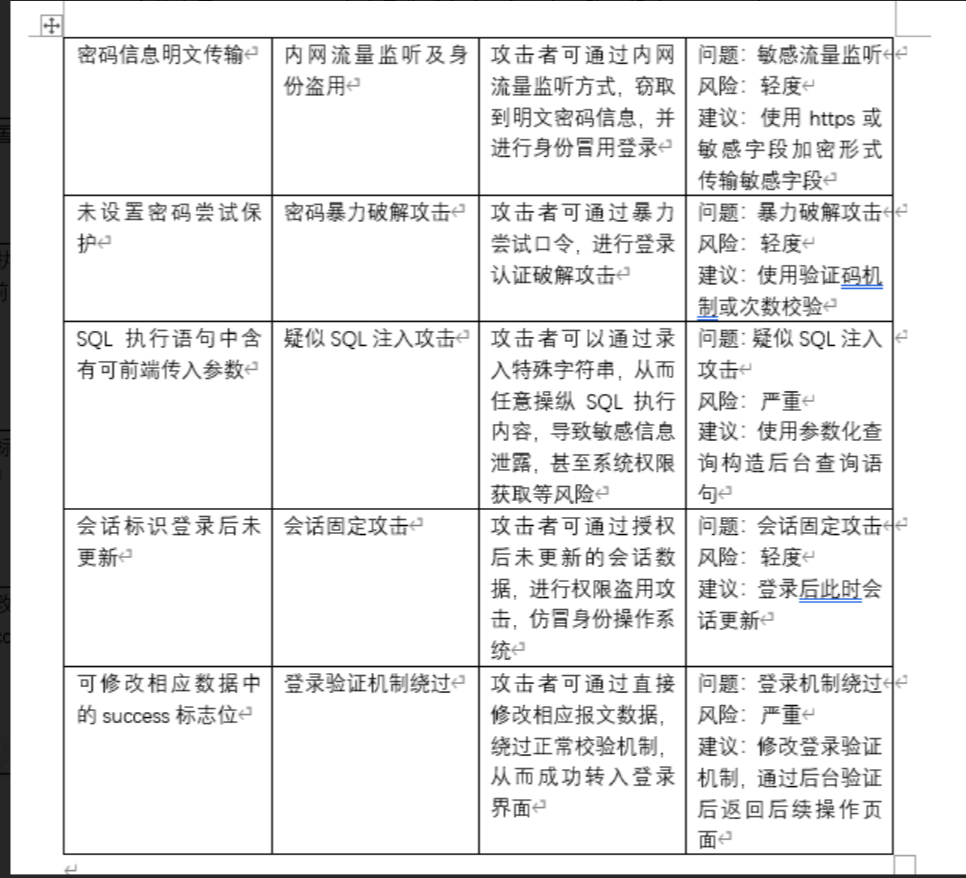
2. 逻辑漏洞详解
2.1 常见的逻辑漏洞
1 | |
2.2 如何挖掘逻辑漏洞
确定业务流程--->寻找流程中可以被操控的环节--->分析可被操控环节中可能产生的逻辑问题--->尝试修改参数触发逻辑问题
2.3 身份验证漏洞
1. 暴力破解漏洞
漏洞介绍：攻击者可以通过该漏洞获取用户名和对应弱口令密码，并进行登录操作
漏洞原理：由于没有设置登录失败次数限制，导致攻击者可以通过口令字典进行特定用户的密码爆破或通过用户名字典进行特定弱口令的用户枚举
漏洞点：系统登录点
漏洞修复： 对于固定用户名爆破密码
可以针对用户名进行错误次数计算，高于一定阈值账号锁定一段时间，或者添加验证码
但是不能永久锁定，可能被用来进行账户恶意锁定
对于固定密码枚举用户名、 需要计算IP对URL的请求情况，某个IP短时间大量请求登录应该加入黑名单 进行传输数据加密有一定的防护效果
2. Session固定攻击
漏洞介绍：会话固定攻击是利用服务器的session不变机制，借他人之手获得认证和授权，然后冒充他人
漏洞原理：在请求登录过程时候，URL带有一个session，登录成功之后会将登录成功的信息绑定到这个session中，攻击者可以发送带有session的URL给相关工作人员诱导其登录，相当于获取了其身份信息
攻击流程：
1 | |
漏洞点：在GET方法请求登录时候带有session值
1 | |
修复思路：
只要避免在URL中带入session信息即可比较有效的防御
另外也要注意POST请求中带有sessionid进行session固定攻击，虽然可利用性比较低，但是建议修复
漏洞实战
这里用YXcms建站系统复现，由于源代码太难找了，这里就跟着走吧…
复现过程
yxcms允许我们自定义session，而且这个过程通过get方式来完成。我觉得这样的问题属于CSRF，不经意之间就能获取大效果。其问题代码如下：
1 | |
当$_GET[‘phpsessid’]非空时，就令session_id为我们传入的值。
于是我们构造一个链接让管理员点击，管理员点击后会重新设置他的session，而且这个session就是我们构造的。因为session重置了所以管理员也需要重新登录，而重新登录后其session_id就是我们构造的。我们只要利用这个session_id就能登录管理后台了。
比如我构造一个链接：
1 | |
将这个链接发给受害者（火狐浏览器），诱使受害者管理员点击该链接，点击后后会跳转到登录页面，但此时他的phpsession已经是我们构造的f4cking456了
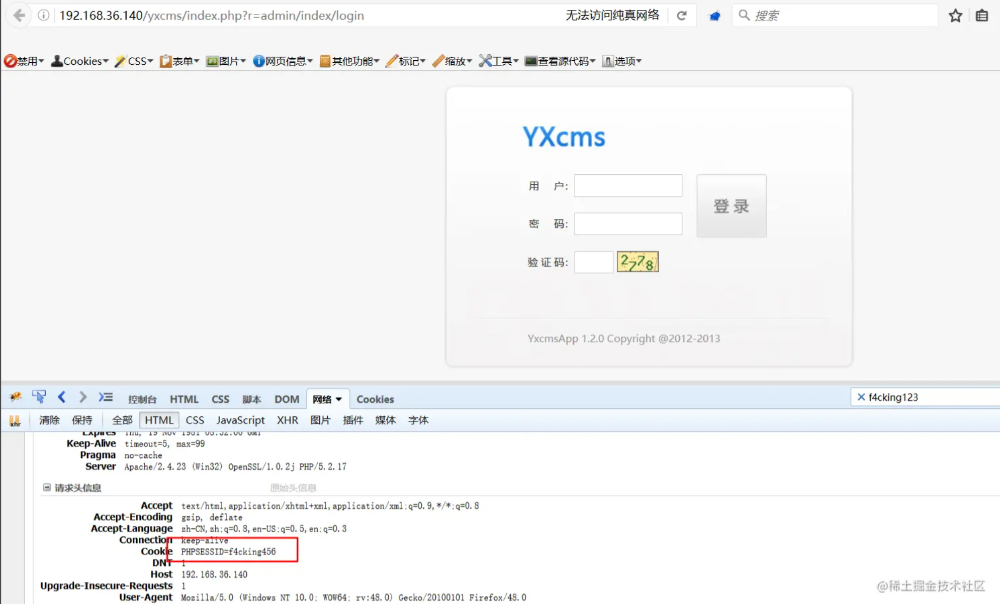
此时如果受害者登录这个网址，那么这个session就有后台权限了。
假如受害者登录该网址
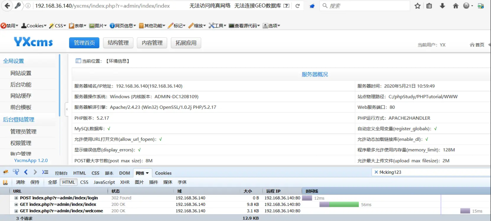
那么我们利用这个链接
这时攻击者（谷歌浏览器）访问该链接，直接进入后台界面
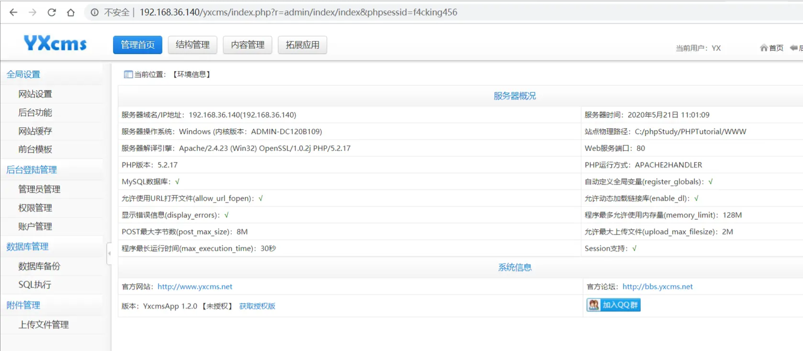
有个前提就是，实战过程中你需要知道该网站后台地址是什么
3. Cookie欺骗漏洞
漏洞介绍：通过伪造cookie信息能够伪造其他用户进行登录。
漏洞原理：开发者为了方便将身份信息/登录信息明文或者只是简单编码、哈希之后存放在cookie中，网站通过获取得到的cookie进行授权或者身份验证
漏洞点：cookie中有明显或者只是简单编码、哈希的字段时候 修改lsLogin值为1可以判定为用户已经登录 修改cookie为asp163=UserName=admin
漏洞修复： Cookie不应该存储可理解的身份信息和登录信息 按照规定，cookie对身份信息和登录信息的存储只能通过存储足够长度的随机字符串进行，避免篡改
漏洞实战
大体就是通过某种手段获取其他用户或者管理员的cookie，而由于该cookie存储的是可理解的身份信息和登录信息，则攻击者获取该cookie后，凭借该cookie登录网站便可以实现免密登录到其他用户或者管理员页面
2.4 权限类逻辑漏洞
权限相关逻辑漏洞是逻辑漏洞中出现的最多的漏洞
1. 平行权限跨越
漏洞介绍：即普通用户/管理员能访问其他普通用户/管理员才能够访问的系统信息或者系统功能
形成原因：在进行方法调用时候未进行请求用户和目标信息拥有者是否匹配一致，直接用userid/email之类的容易遍历的参数进行数据库查询
漏洞点：在普通用户/管理员登录后的能访问的链接或者功能中都可能存在
漏洞修复：
在权限管理中，平行越权的权限管理颗粒度最小
需要在方法中进行相关的获取请求request，再利用getAttribute(“userid”)获取其userid，直接使用该userid作为参数进行数据增删查改，避免userid参数传输
漏洞复现
登录，同时bp抓包：
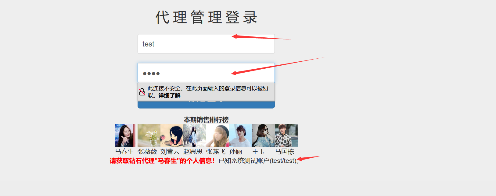
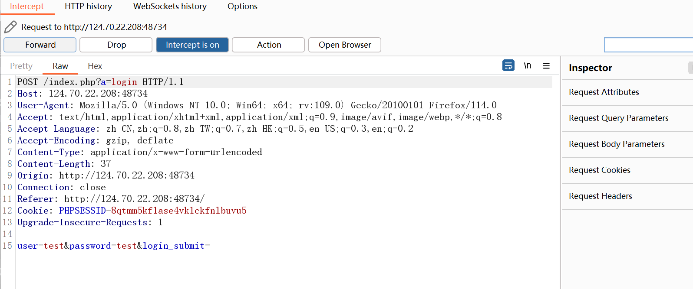
放包，可以看到当前的test用户（这里放包了很多次…）
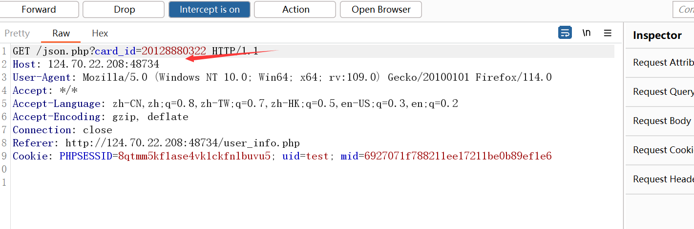
在这里可以看到这个card_id对应的就是每个用户对应的id
发送到爆破模块遍历一下，这里他是对后两位进行的遍历
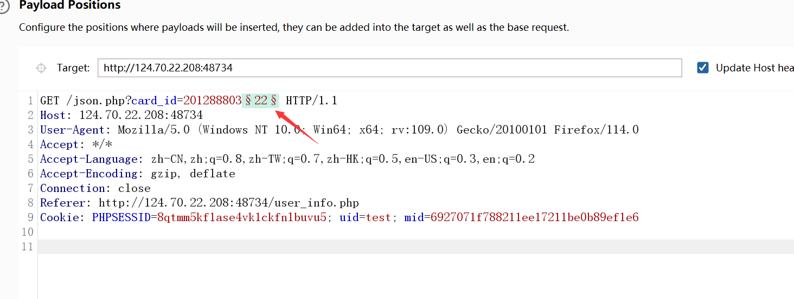
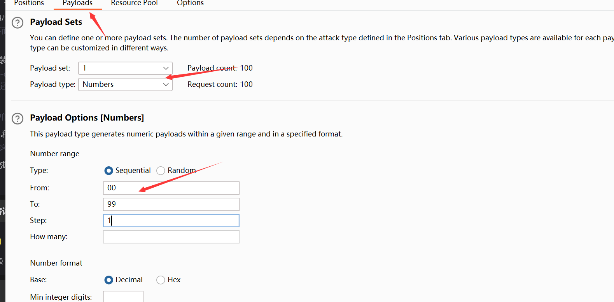
然后来到登录界面，右键查看马春生的图片，检查源代码属性：发现其id尾号以16结尾，我们开始爆破
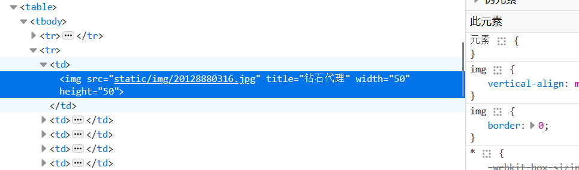
这里就是马春生的个人信息
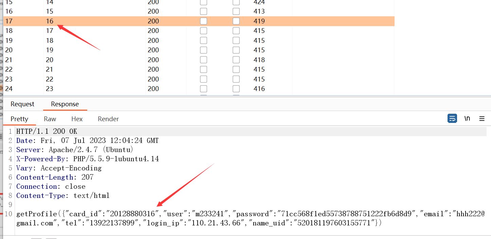
我们将密码拿去md5破解一下
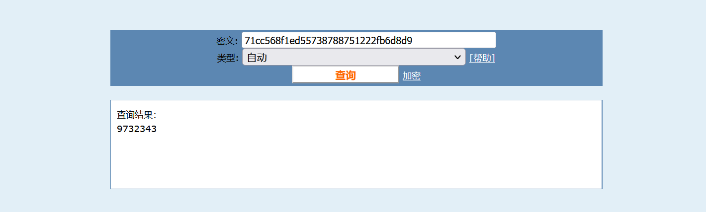
随后凭借该用户名和密码登录即可，成功拿到key
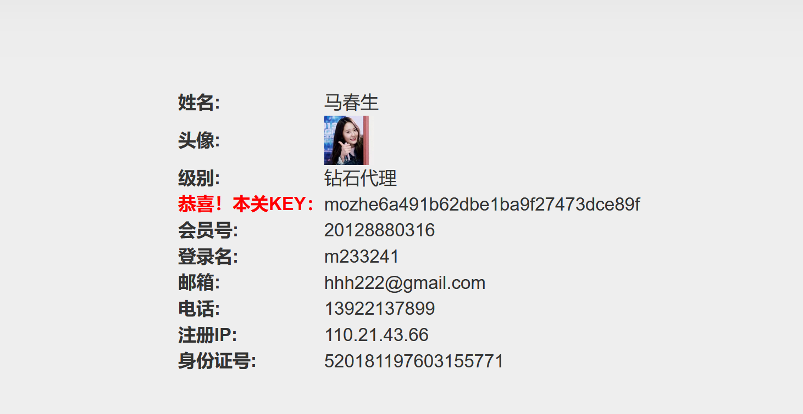
漏洞总结
先公布一下背景
1 | |
这里我也是跟着教程做的，因此几乎没有自己的思考，为了不摸鱼，还是浅浅总结一下
题目告知我们重点是马春生，那我们便要实现水平越权以便以马春生的用户信息登录网站，那我们进入靶场（我尽可能的以实战的思路来吧），首先就是搜集信息，burp抓包，F12这些肯定是少不了的，这里也是学到了一点东西，搜集信息尤为重要
1 | |
2. 垂直权限跨越
漏洞介绍：即普通用户能够访问管理员甚至超级管理员才能够访问的系统信息或者系统功能
形成原因：程序在方法调用时候，缺少角色等级校验
漏洞点：在任何用户登录后才能访问的链接或者功能中都可能存在
对每一个传输的参数都要了解参数的目的，尝试将用户名改为admin尝试绕过
漏洞修复：
需要校验用户是否有权限访问这个方法
获取请求request，再利用getAuttribute(“roleid”)获取其角色等级，检查角色等级是否合法，错误则直接返回错误跳转，返回页面必须仍然从Attribute中获取userid再进一步查询相关信息，值得注意的是切勿将错误跳转写到Javascript里面，还返回目标URL页面的相关信息。
Couchdb 垂直越权（CVE-2017-12635）
1 | |
漏洞成因
问题在于 Javascript JSON 解析器（在验证脚本中使用）与 CouchDB 内部使用的名为jiffy的解析器之间存在差异。查看每个对象如何处理对象上的重复键，例如：{"foo":"bar", "foo":"baz"}
Erlang：
1 | |
JavaScript：
1 | |
对于给定的键，Erlang 解析器将存储这两个值，但 Javascript 解析器将仅存储最后一个值。不幸的是，CouchDB 数据内部表示的 get_value 函数只会返回第一个值：
1 | |
因此，我们可以绕过所有相关的输入验证并创建一个管理员用户：
1 | |
js解析只存储第二个值，roles为空，权限放行；但Eralang解析器将解析并存储两个值，但是在CouchDB中get_value函数只返回了jiffy所解析到的第一个键的值，即admin，管理员权限。
注：通过查看源码，权限判断中，只要roles长度大于0就返回forbidden，只有管理员才能进行修改。
所以此POC成功绕过js的检查，并成功被erlang解析为管理员账户。
进入实际环境中会发生如下身份验证过程：
JavaScript在检测时，检测我们创建的用户“角色＝０”。无角色，也就不存在权限，所以没有危害，系统判定为安全，绕过了检测。接下来在CouchDB的Erlang部分实现身份验证和授权时，jiffy实现的时候，getter函数只返回第一个值也就是"roles": [“_admin”],所以创建出了具有admin权限的账户。
开始复现
访问首页发现是json数据
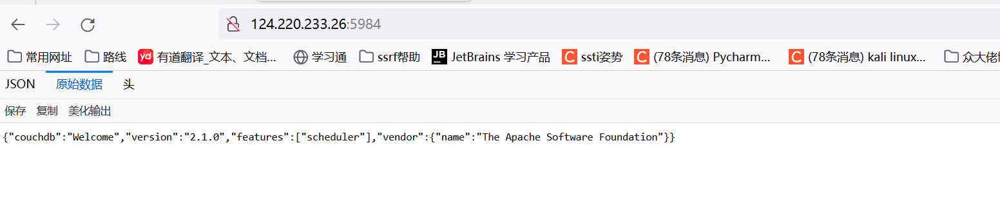
接下来访问http://127.0.0.1:5984/_utils/ 发现
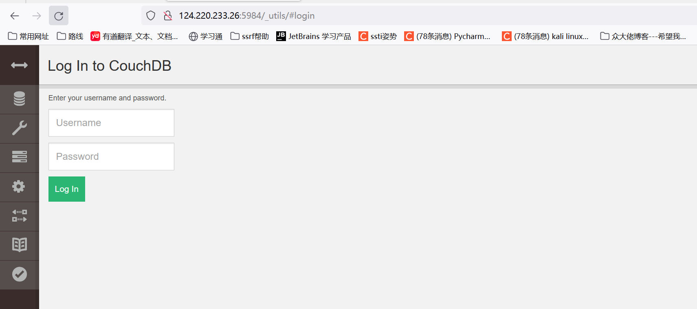
点击验证数据库正确性，发现我们不是管理员无权操作，这样的话我们尝试直接创建一个管理员用户
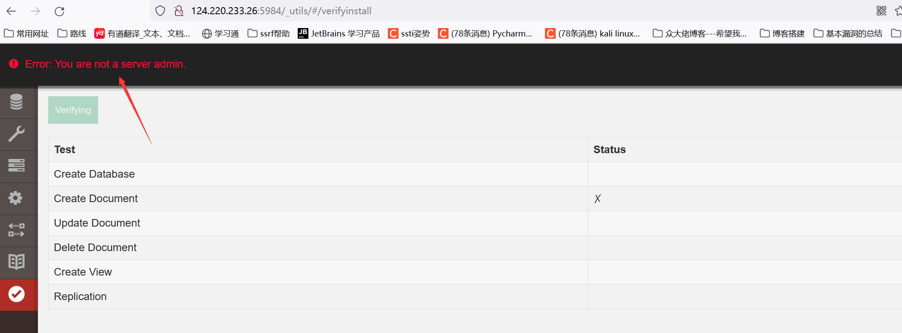
接下来用的是网上的poc：用put发送一个请求创建管理员的数据包
1 | |
先用bp抓个包，其实抓不抓都无所谓，我们也可以在终端上通过curl发送put数据包
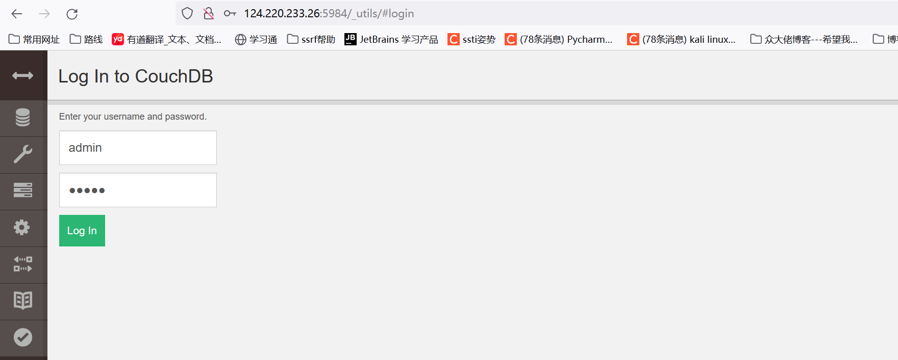
接下来在bp上，输入上述poc，如下图发现我们不是管理员，无权创建管理员账户
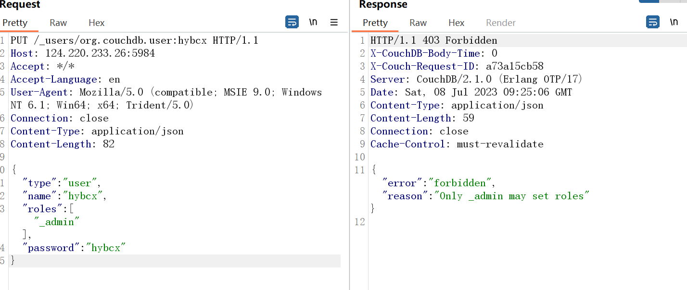
但发送包含两个roles的数据包，即可绕过限制，创建一个管理员账户，这里创建了一个账户密码皆为hybcx的管理员账户，发送如下poc
1 | |
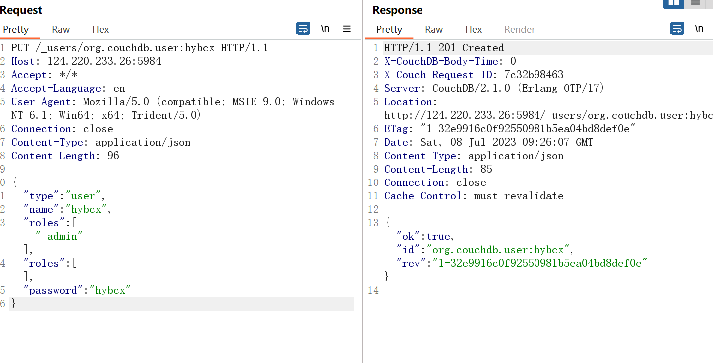
可以看到我们成功创建，登录验证一下
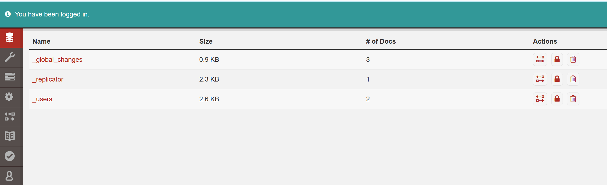
也是成功登陆
漏洞修复
patch：加入了dedupe_keys字段用于对重复键的标识，重写了make_object方法，使得jiffy解析JSON的方法和JavaScript一致。
结论：尽量不使用多个解析器处理相同的数据。如果项目使用多种语言，不可避免发生这种情况，应该确保解析器间没有功能差异，如这里JSON 解析标准就没有指定重复键的行为。
参考文章：https://www.cnblogs.com/qweg/p/16574127.html
3. 未经授权访问
漏洞介绍：即游客能够访问普通用户甚至超级管理员才能访问的系统信息或者系统功能
形成原因：主要是系统设计期间没有进行全局用户身份校验；或者校验存在缺陷
漏洞点：在任何用户登录后才能访问的链接或者功能中都可能存在
漏洞修复：
J2EE中存在filter，可以获取用户的cookie等信息
修复思路：
建立LoginList，值是当前在线用户的id
对所有需要登录访问到URL，获取请求request
再利用 getAttribute(“userid”) 获取其userid
检查userid是否存在于LoginList中，不存在则直接返回错误跳转
值得注意的是切勿将错误跳转写到Javascript里面，还返回目标URL页面的相关信息
Docker daemon api未授权访问漏洞
漏洞简介
Docker Daemon把服务暴露在tcp的2375端口上，这样就可以在网络上操作Docker了。Docker本身没有身份认证的功能，只要网络上能访问到服务端口，就可以操作Docker。与上面的docker.sock文件利用类似。
简单来说：该未授权访问漏洞是因为Docker API可以执行Docker命令，该接口是目的是取代Docker命令界面，通过URL操作Docker。
环境搭建
为了更贴近实战，所以不使用vulhub搭建docker，直接在宿主机上直接搭建。
首先虚拟机创建一台linux（centos7版本）
机器正常安装好docker
接着进行文件备份（一下均是以root身份操作）
1 | |
接着编辑
1 | |
把下面一段代码加入文件结尾
1 | |
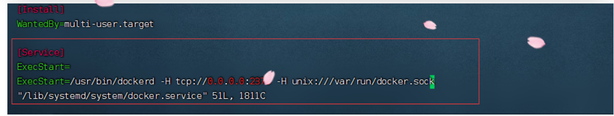
保存并退出编辑后，重载守护进程以及重启Docker：
1 | |
通过执行命令查看是否开放了远程访问端口：
1 | |
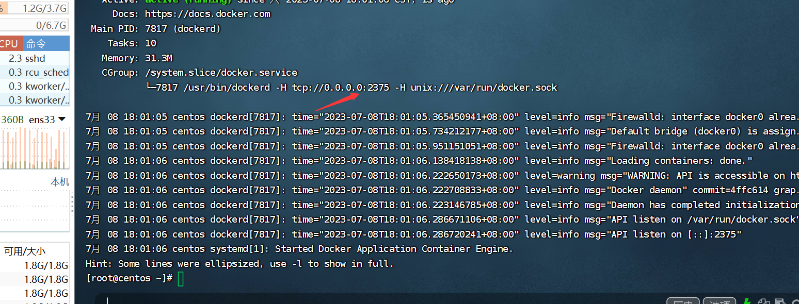
如果本地搭建访问不了的话，很大原因是因为防火墙未放行2375端口，放行端口后就可以在其他机器访问到了
1 | |
漏洞检测+利用
访问192.168.4.92:2375/version，若能访问，证明存在未授权访问漏洞。
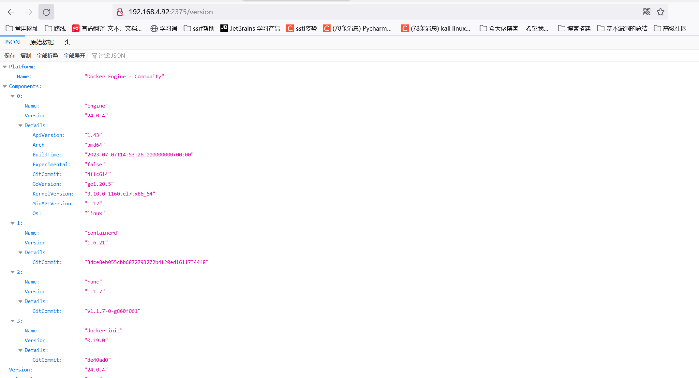
目标机：192.168.4.92
攻击机：124.220.233.26
写入密钥免密登陆
在已经安装docker的vps上，使用-H参数连接目标主机的docker，使用images命令查询目标系统存在的镜像。
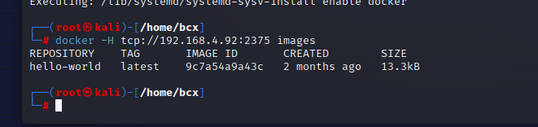
使用docker命令创建一个容器，并将宿主机的磁盘挂载到容器中
docker -H tcp://192.168.4.92:2375 run -it -v /:/mnt a98b9e39cc6d /bin/bash
a98b9e39cc6d 是镜像的ID
这条命令的意思是启动一个image ID 为a98b9e39cc6d的容器，并且将该宿主机的根目录挂在到容器的/mnt目录下
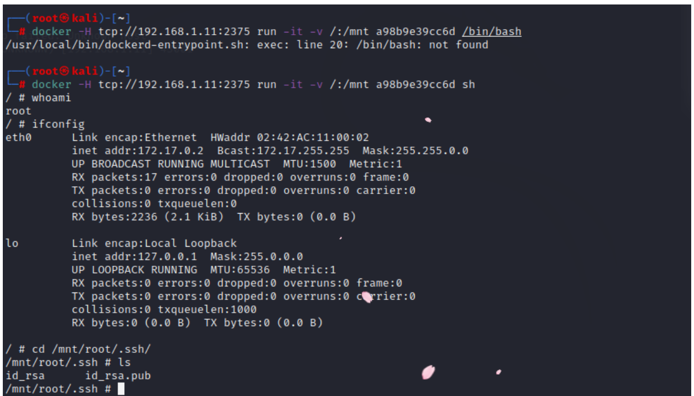
如果目标机器上没有镜像就需要先pull一个镜像到目标机上。
1 | |
这个镜像很小，方便下载。
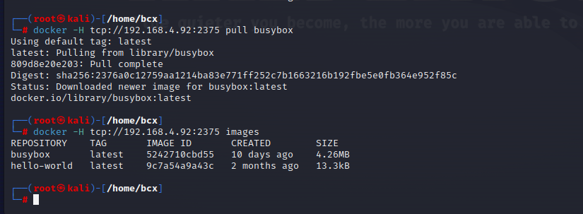
有镜像之后就很方便利用了。
1 | |
启动之后就会获得该容器宿主机的shell
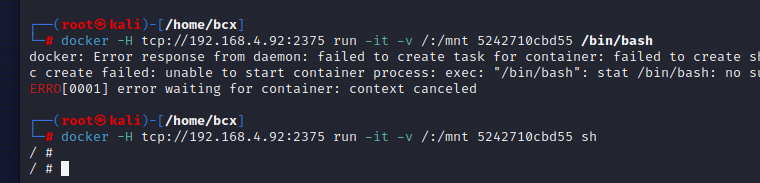
因为我们把主机的根目录挂在到了这个容器的/mnt容器下，所以我们可以直接往主机的/root/.ssh目录下写authorized_keys
我们将攻击机的公钥写入authorized_keys
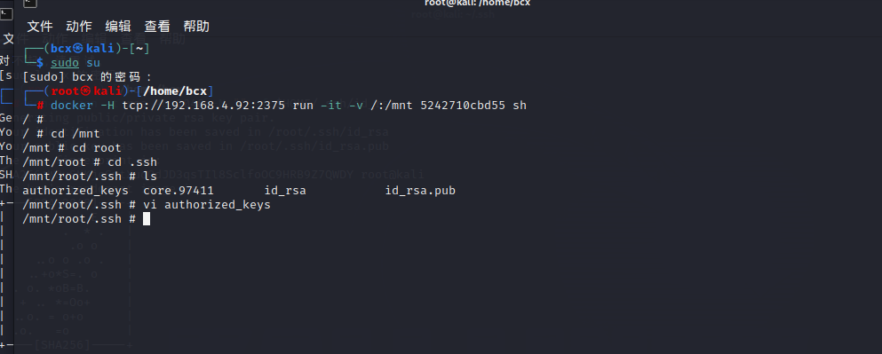
这里我之前目标机与kali都没有公钥，产生公钥可以参考文章：Linux实现ssh免密
成功免密登陆目标服务器
1 | |
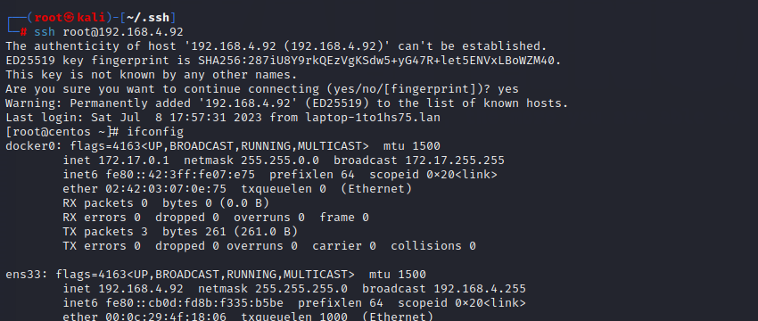
写入计划任务反弹shell
因为docker 有远程连接命令，由于2375端口暴露，可未授权访问，所以现在可以在kali上通过远程方式连接doker
前面的操作都一致
唯一不同的就是写的命令和路径
有很多种写计划任务的方法
1 | |
链接进去之后，发现没有镜像文件，那么去官方下载一个镜像文件busybox
1 | |
接下来启动容器，并进入 busybox 容器
1 | |
进入容器后，使用fdisk -l命令查看磁盘文件
注意：在特权模式下，逃逸的方式很多，比如：直接在容器内部挂载宿主机磁盘，然后切换根目录。
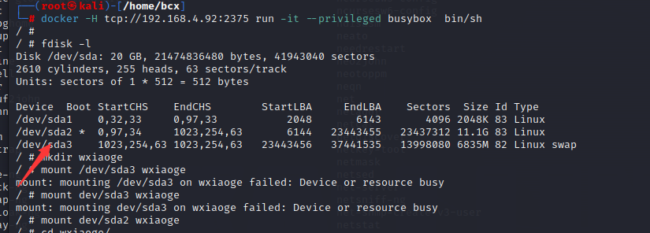
从返回的type信息中可以判断出，/dev/sda2是主分区，那么接下里直接在容器内部挂载宿主机磁盘
1 | |
接下来看一下靶机中确实创建了 wxiaoge.txt 文件，docker逃逸成功
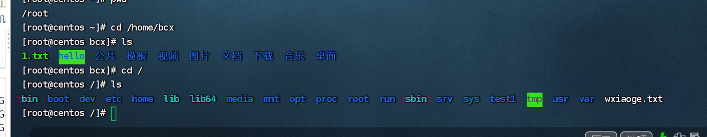
接下来可以反弹主机shell
创建 wxiao.sh 文件
1 | |
写入反弹 shell
1 | |
之后给 wxiao.sh 添加执行权限，并且写入到定时任务中
1 | |
kali打开监听端口
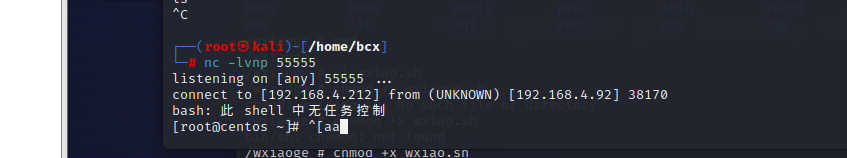
一分钟后成功返回 shell
参考文章：https://www.modb.pro/db/152994
漏洞修复：
1 | |
2.5 图形验证码漏洞
1. 图形验证码突破
漏洞介绍：攻击者通过突破图形验证码的验证，可以实现如登录爆破、验证码绕过等攻击
漏洞原理：
图形验证码在错误后未失效
返回验证码信息
分步验证验证码
漏洞点：任何存在图形验证码的功能中
漏洞修复
一旦验证码使用过了，必须要进行删除，重新生成验证码，可以梵高attribute中
验证码需要设置超时，时间一到立即删除旧验证码，用户需要获取新的验证码
验证码只需要返回图片，切勿将生成验证码的字符串也一并返回
验证码不应该进行分布校验，应该连同请求数据一起发送到目标服务器进行校验，服务器校验通过则返回合法数据，否则返回错误
pikachu-on server
测试结果：验证码有验证、无回显，但存在验证码固定（可重复使用）的设计缺陷。
以下为验证码固定问题测试过程和源码分析。
测试过程
输入不正确的账户/密码及正确的验证码测试
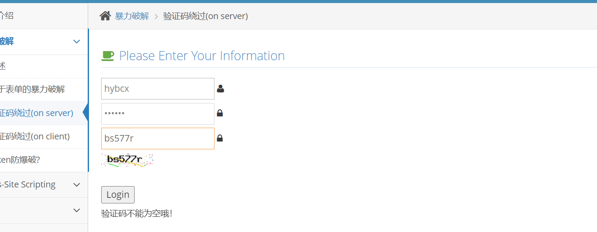
重复提交该数据包均只返回用户名或密码错误，说明存在验证码固定漏洞。
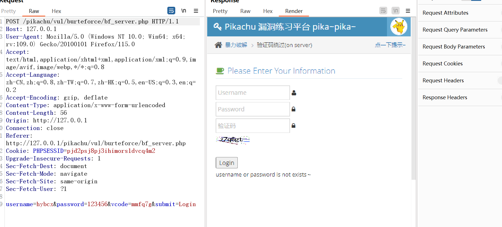
所以我们可利用此漏洞绕过验证码直接对用户名和密码进行暴力破解。
源码分析
文件：\vul\burteforce\bf_server.php
关键代码：
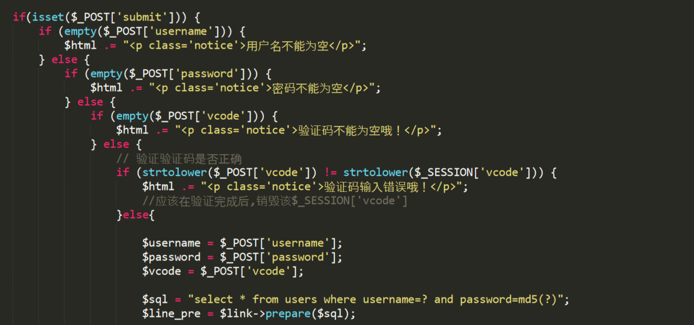
在用户名、密码和验证码均不为空的情况下判断输入验证码是否与生成后保存在session中的验证码相同，但比较完后没有删除该session[vcode],导致下一个数据包输入该验证码也会判断正确，出现验证码重复使用问题。
凭借此漏洞，我们可以对用户名与密码进行爆破，验证码随意即可（但要保证该验证码是在校验页面出现过的验证码）
pikachu-on client
测试过程
通过查看源码发现前端JS判断验证码是否正确，所以先输入正确的验证码绕过前端判断。
输入不正确的账户/密码及验证码进行抓包测试。
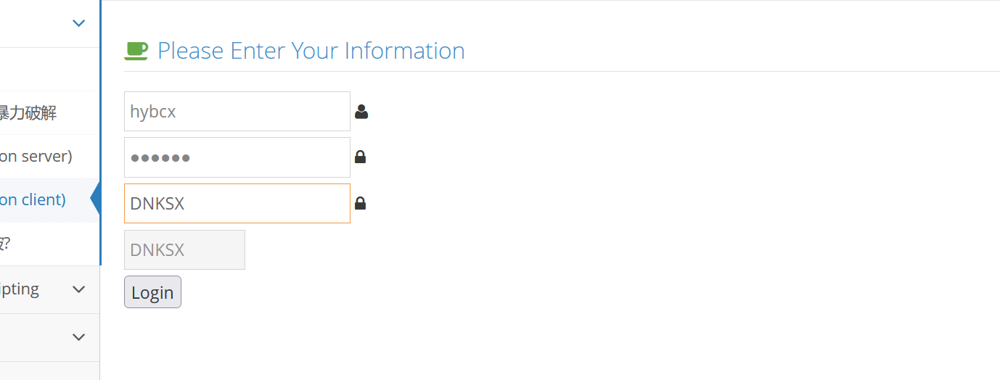
由于已经绕过前端js对验证码的判断，可以将请求包中的验证码参数删除。（可以删除vcode参数）
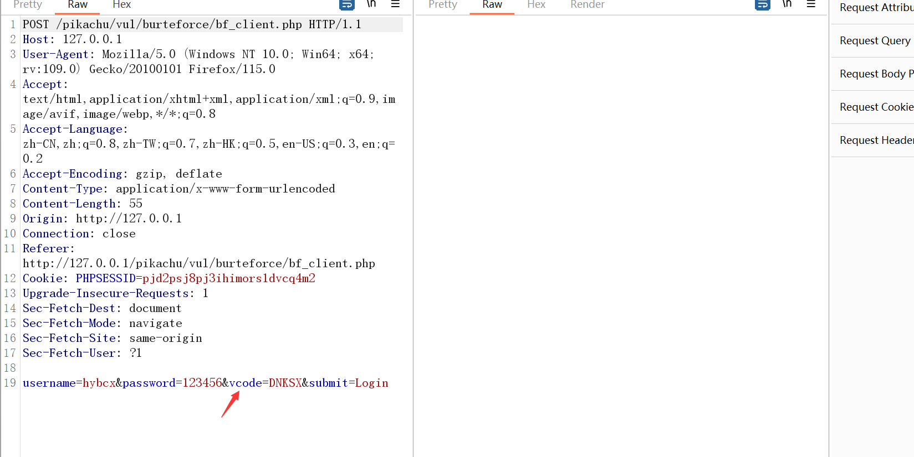
再将数据包发送到intruder对用户名和密码进行暴力破解即可。
源码分析
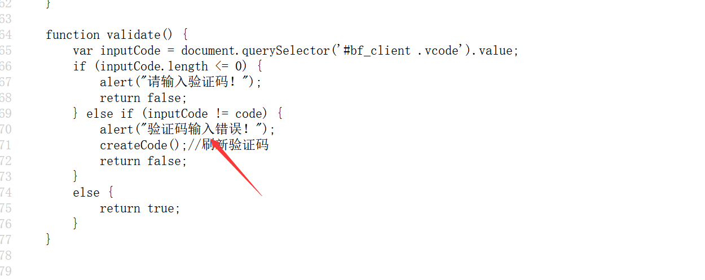
可以看到这里进行的前端js校验
更多参考：https://xz.aliyun.com/t/6971#toc-20
2.6 找回密码逻辑漏洞
1. 密码找回漏洞
漏洞介绍：攻击者通过密码找回逻辑漏洞，可以重置他人账号密码，危害他人账号安全
漏洞原理：其实是验证码漏洞的一种：
验证码时间长可爆破
返回重置密码凭证
若加密的重置密码凭证
漏洞点：任何密码找回处（可延伸至相似具有验证功能） 修改接受校验码目标
漏洞修复
一旦验证码使用过了，必须要进行删除，重新生成验证码，可以放到attribute中
验证码需要设置超时，时间一到立即删除旧验证码，用户需要获取新的验证码
校验凭证不能够随着返回包进行返回
验证码不应该进行分布校验，应该连同请求数据一起发送到目标服务器进行校验，服务器校验通过则返回合法数据，否则返回错误
校验凭证的生成需要进行随机生成，防止凭证破解
用户身份凭证和权限类漏洞修复一样，需要从attribute中获取
登录密码重置漏洞-墨者学院
打开靶场界面如下：
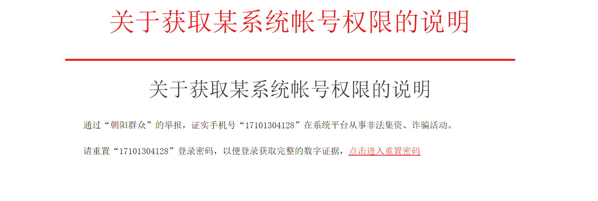
1、通过“朝阳群众”的举报，证实手机号“17101304128”在系统平台从事非法集资、诈骗活动。
2、请重置“17101304128”登录密码，以便登录获取完整的数字证据
点击进入重置密码，来到密码重置界面
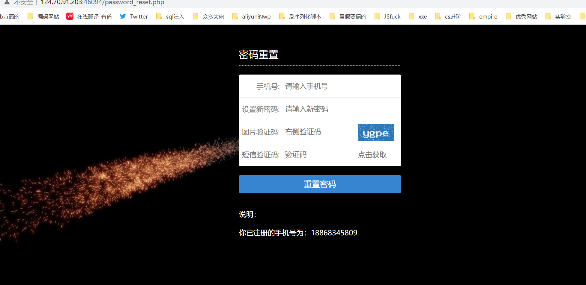
已注册的手机号为18868345809
先输入手机号17101304128，输入新密码：图形验证码，点击获取短信验证码

提示：已发送至该手机，短信已发送有效期为5分钟
再输入我已注册的手机号18868345809，设置新密码，验证码，获取验证码 得到验证码：Vxka6a
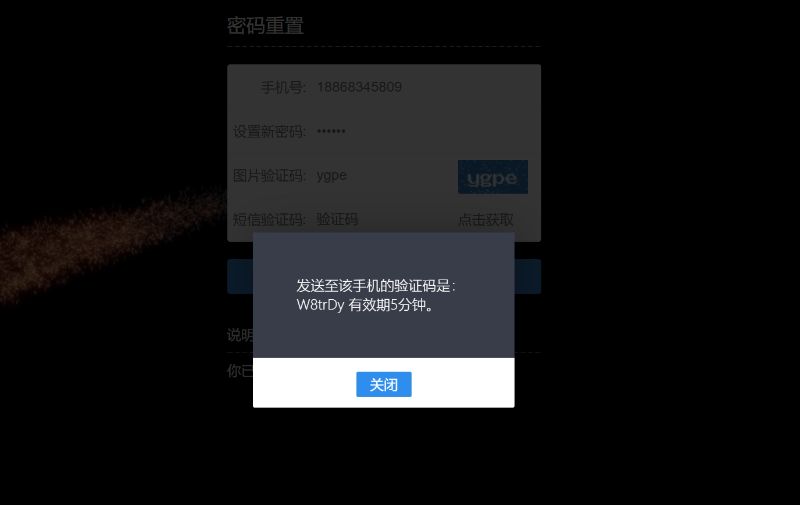
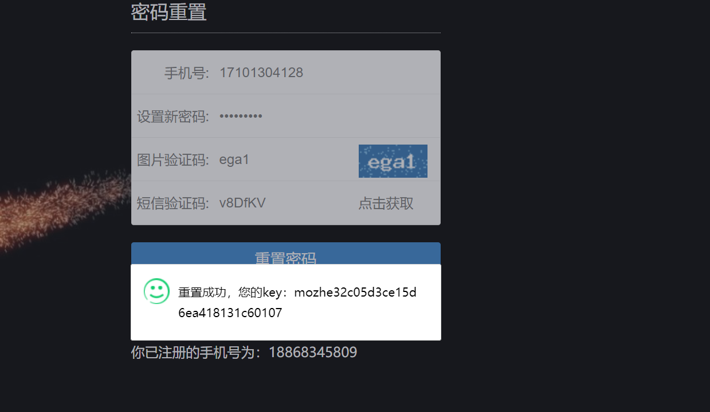
漏洞点：他说短信已发送至该手机，可是这手机号也不是我的呀，我并不知道验证码是啥。此时就可以大胆的猜想一下，它这个网站的逻辑会不会出现问题，只是统一验证输入的验证码是否是正确的，而没有对绑定的手机号进行校验。我们可以使用刚才得到的验证码863bTV来尝试重置，成功得到key值。
第二种做法：先用自身的账号进行密码重置流程，在得到验证码后，bp抓包修改手机号参数（换成目标手机号即可）这样同样可以的到key，两种想法都一样，只不过第二种似乎更好理解
2.7 业务数据篡改漏洞
1. 业务数据篡改（赋值反冲）
漏洞介绍：攻击者通过进行数值篡改进行攻击，从而获利
漏洞原理：
没有对传输数据添加相关的校验参数
后台未对参数值进行校验并直接使用数据包中的参数
漏洞点：抽奖、购买、转账、返现等功能
漏洞修复：
对于软件来说，需要保护好内存数据，防止内存数据篡改
计算传输数据的哈希，并将哈希附加在传输数据中作为校验值，避免被篡改
先校验数值，防止大整数和负数；接着利用传输的商品ID从数据库中获取商品单价重新进行价格计算；最后生成订单（订单号应为随机值）
dami__cms-0元支付漏洞

直接小p一把梭，注册登录cms看到如上页面
点击在线充值、我要提现，看到当前余额是0
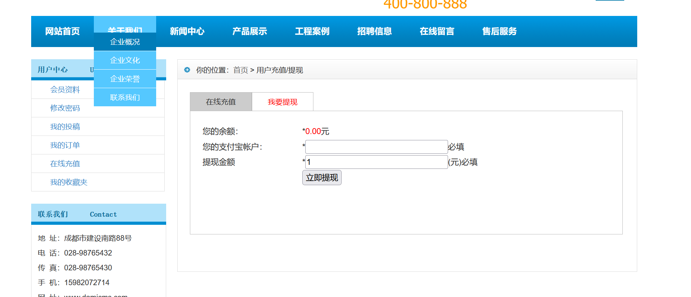
点击产品展示、大米测试产品
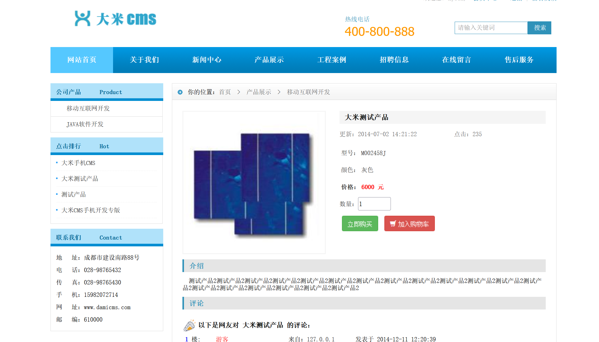
点击立即购买
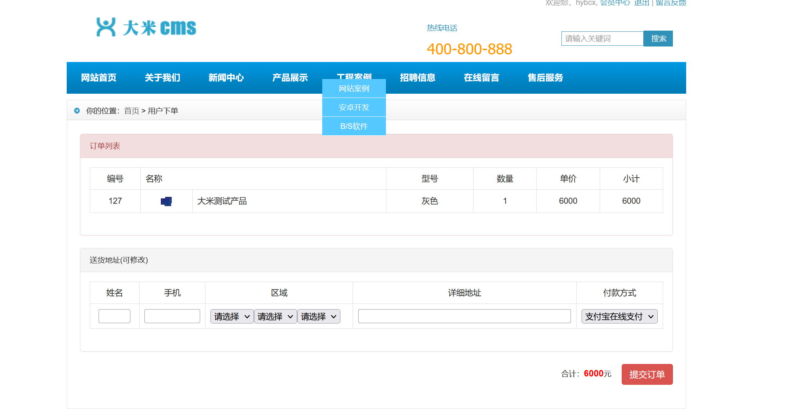
填写完整送货地址，将付款方式修改为站内扣款
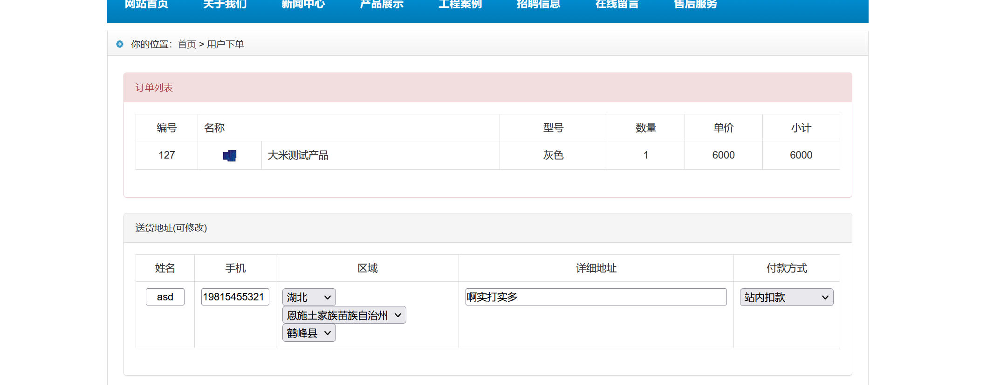
点击提交订单，同时使用burp进行抓包操作
将qty参数修改为-1，然后点击Forward，并取消抓包
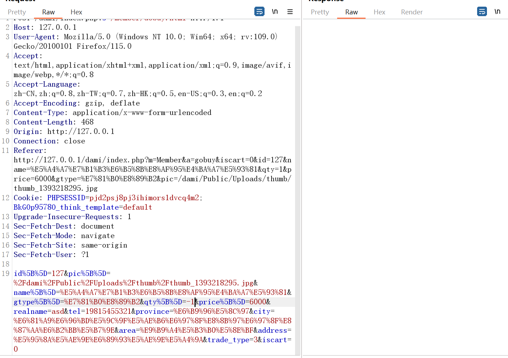
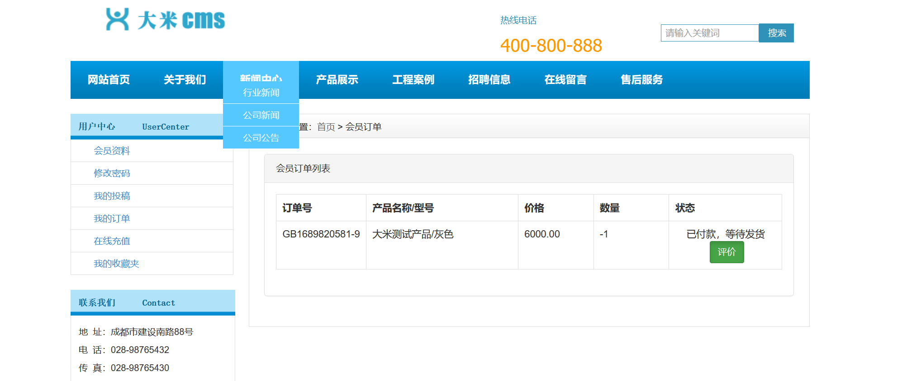
可以看到订单已经提交成功了
此时查看提现页面的余额已经变为6000，也就是将订单中的-6000反加到了账户余额中
利用0元支付漏洞，在网站商城进行购买操作时，可无需支付货币，对商城造成极大危害。
应明确业务逻辑，防止出现此情况
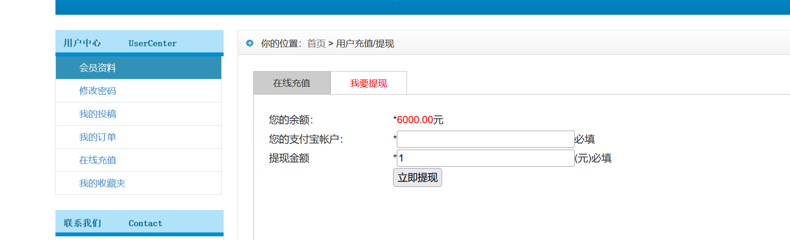
2.8 执行顺序逻辑漏洞
1. 执行顺序篡改
漏洞介绍：攻击者通过篡改分步逻辑中的步骤数字，达到绕过支付、校验等效果
漏洞原理：程序逻辑分布进行，但是对步骤、验证信息、支付信息没有做好严格校验，导致修改步骤就直接绕过验证或者支付
漏洞点：任何分布逻辑且带步骤数字，或者利用JS进行步骤控制的功能中
漏洞修复
在请求最后一步时候需要带入前面的验证信息，服务端再进行一次校验信息的验证，验证正确方能继续执行数据操作
也可以及通过getAttributr(“userid”)获取userid进行userid和验证结果绑定，最后一步不带入验证信息，但是仍然要获取userid进行校验
再最后一步通过验证之后或者服务器收到支付信息后再生成相应的数据交给用户
2.9 其他类型逻辑漏洞
1. 条件竞争漏洞
漏洞介绍：可以通过同时重放大量数据包进行漏洞利用，通常用于突破限量、限额的问题都有奇效
漏洞原理：由于目标函数中，判断与数据修复两个步骤之间，或者两个数据修改步骤之间存在时间差，且函数未进行同步锁定，则可以造成漏洞
漏洞点：程序中存在限制，可以猜测到后台有判断与修改操作的方法
漏洞修复
修复思路：使用synchronized关键字，可以限制同一时间内访问方法的只有单一线程
并不是每个条件竞争都必须修复
2. 数据包重放漏洞
漏洞介绍：通过数据包重放，可以造成短信轰炸、邮件轰炸、重复提交订单等
漏洞原理：后台未进行相关操作的技术导致数据包重放
漏洞点：短信验证码、邮件校验、提交订单等功能。
修复方案：
修复思路（针对短信、邮件）
构造一个Hashmap<String，short>，存放邮箱或电话号码及对应次数
只要某个邮箱或者电话号码次数够了，就不能继续发送了
或者计算两次发送的时间间隔，时间过短就不继续发送了
通用修复方案
需要建立token机制或验证码机制，一次有效
3. 参数绑定漏洞
漏洞介绍：通过添加对象字段相关参数进行数据篡改
漏洞原理：对象自动绑定被许多框架支持，它允许将HTTP请求参数自动的绑定到对象，开发者没有对其进行安全校验则容易导致数据篡改
漏洞点：常见的所有输入的地方都会出现这个漏洞，特别是金融、用户、缓存等。
漏洞修复：Spring MVC中可以使用@InitBinder注释，通过WebDataBinder的方法setAllowedFields、setDisallowedFields设置允许或不允许绑定的参数
这里了解一下该漏洞产生原理吧
软件框架有时允许开发人员自动将HTTP请求参数绑定到程序变量或对象中，以使开发人员更容易使用该框架开发。这有时会造成伤害。攻击者有时可以使用这种方法来创建，修改，更新开发人员或者业务本身从未打算设计到的参数，而这些新参数反过来又会影响程序代码中不需要的新变量或对象。
因此就拿Spring MVC中的自动绑定作为举例，假设有一个用户提交基本信息的功能：
首先看前端html：
1 | |
很简单，一个form表单，通过post提交username，phone，email到addUserInfo。
我们看一下用户的实体类：
1 | |
可以看到User的实体类存在除了username，phone，email还有比较重要的userid和isAdmin参数。
我们接下来看一下controller层如果利用了自动绑定可以写出的处理方式：
1 | |
针对上述代码，给出GPT回答
1 | |
潜在危害
结合上面的demo，我们可以看到，controller层使用的自动绑定对象的方式，也就是使用了post请求的参数直接绑定到了User，虽然前端form表单中仅出现了username，phone，email，但是如果使用burp等工具向addUserInfo发送了
1 | |
或者
1 | |
那么如果后续使用了被污染的对象的被污染的属性，那么就会产生一定的安全问题。
自动绑定漏洞并非仅在Spring MVC中可能出现，只要有自动绑定功能的框架都可能出现这样的逻辑问题。
但是可能对于大部分安全人员来说，可能面对的是一个黑盒的环境，很难发现controller层或者orm是否存在这样的问题，那么可能就需要多个表单的交叉对比，推测出可能出现问题的点了。
修复建议
通用修复方法是：避免将输入直接绑定到域对象，只有用户可以编辑的字段才包含在DTO中。以上文中的deom为例：
1 | |
或者可以修改controller层，仅接收用户可以修改的参数：
1 | |
也可以设置白名单：
1 | |
3.0 SRC中的逻辑漏洞总结
1 | |